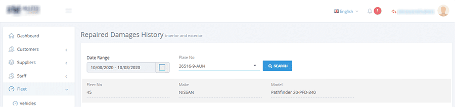
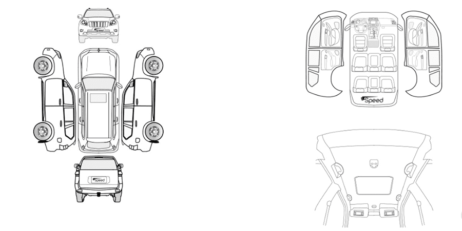

Manage Repaired Damages History
Go to the panel on the left side and click on the Fleet tab.
Scroll down and click on the Repaired Damages History module.
Select a date range and plate number. Then, click on the SEARCH button.
Diagram of that vehicle will appear with previous history of damage repair.
Click HERE if you have a query or an issue.

